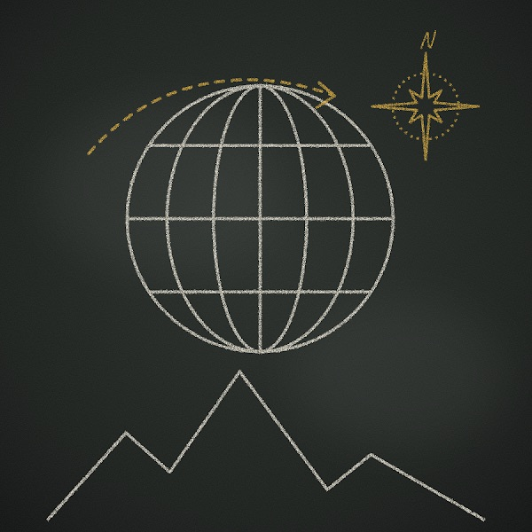
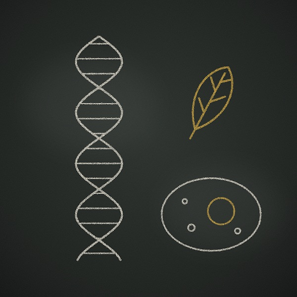

Nie wiesz, od czego zacząć naukę? A może szukasz czegoś, co wreszcie pomoże Ci ogarnąć poziomice, klimatogramy albo mejozę? Jesteś we właściwym miejscu! Znajdziesz tu interaktywne narzędzia do nauki biologii i geografii oraz przydatne, sprawdzone linki, które pomogą Ci zrozumieć trudniejsze tematy, poćwiczyć przed sprawdzianem i odkryć, że nauka nie musi boleć. No dobra, przynajmniej nie zawsze.
Not sure where to start studying? Or looking for something that will finally help you make sense of contour lines, climographs or meiosis? You're in the right place! Here you'll find interactive tools for learning biology and geography, along with useful, carefully checked links to help you understand tricky topics, practise for tests and discover that learning doesn't have to hurt. Well, at least not all the time.
Kliknij narzędzie, żeby zobaczyć jego opis. Wszystkie narzędzia (poza konkursem geograficznym) mają też wersję angielską. Click a tool to read what it does. Every tool is available in English, except the Polish geography contest practice.

GeografiaGeography
Mapy, państwa, kontynenty i inne rzeczy, które trzeba umieć, żeby nie pomylić Australii z Austrią. Narzędzia, które pomogą ci ogarnąć geografię bez płaczu nad atlasem. Wchodzisz, korzystasz, zdajesz. Taki jest plan.
Maps, countries, continents, and other things you should probably know before accidentally booking a flight to Austria instead of Australia. Tools to help you get your geography together without crying over an atlas. Click, use, pass. That's the plan.

BiologiaBiology
Życie na Ziemi to nie tylko ludzie, koty i dziwne rzeczy znalezione pod kamieniem. Odkrywaj organizmy, ogarniaj gatunki i poznawaj tajemnice życia bez udawania, że mitochondrium to twój ulubiony organellum. No dobra, może trochę.
Life on Earth is more than humans, cats, and weird stuff you find under a rock. Explore organisms, identify species, and figure out how life works without pretending mitochondria is your favourite organelle. Okay, maybe just a little.